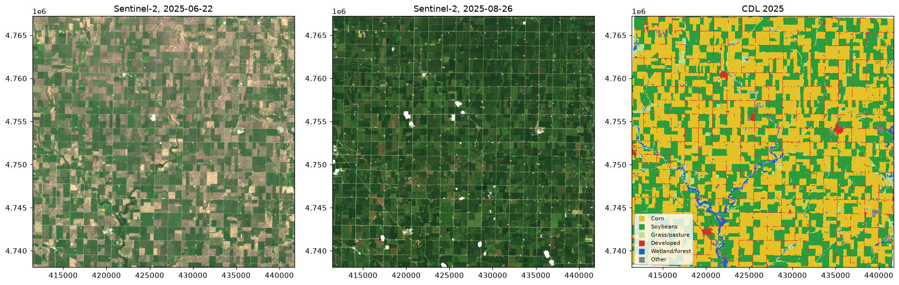
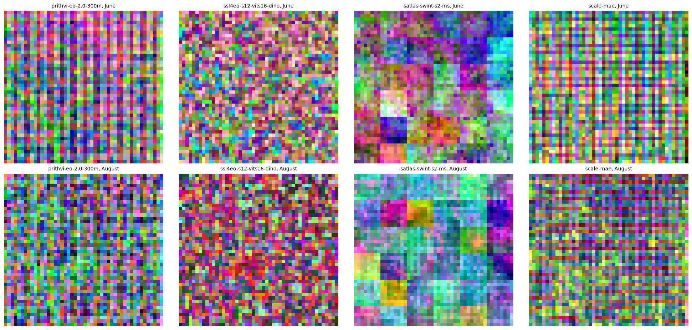
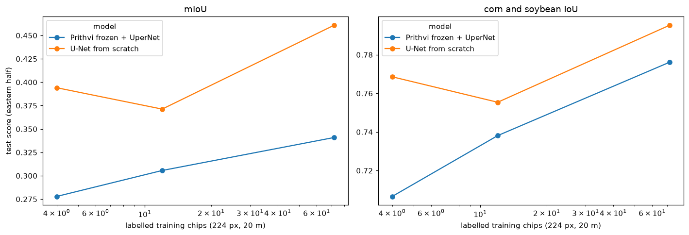

Prithvi, SSL4EO, SatlasPretrain and Scale-MAE on Sentinel-2
Four families of optical encoders cover most of what is used today on multispectral imagery: NASA and IBM’s Prithvi-EO, pretrained on Harmonized Landsat Sentinel-2 (HLS); SSL4EO-S12, pretrained on Sentinel-2 with self-supervised objectives; SatlasPretrain, pretrained with millions of labels; and Scale-MAE, pretrained on high-resolution RGB at many scales. This notebook runs all four on the same Iowa Corn Belt scenes at their native resolution, asks how much crop information their frozen patch features hold early and late in the season, shows why random cross-validation flatters them, clusters their embeddings without labels, and finally fine-tunes Prithvi into a crop segmentation model and compares it with a U-Net trained from scratch, with few and with many labels.
Overview
The four optical encoders
Model
Pretraining data
Objective
Architecture
Input
Prithvi-EO-2.0-300M
4.2 million HLS time series, global
masked autoencoding with 3-D patches
ViT-L, 24 blocks, 1024-d
6 HLS bands, 30 m, 1 to 4 dates
Prithvi-EO-1.0-100M
HLS over the contiguous US
masked autoencoding
ViT-B, 12 blocks, 768-d
6 HLS bands, 3 dates
SSL4EO-S12 ViT-S/16
250,000 places x 4 seasons of Sentinel-2 L1C
DINO self-distillation
ViT-S, 384-d
13 Sentinel-2 bands
SatlasPretrain Swin-T
302 million labels on Sentinel-2 and NAIP
supervised multi-task
Swin-v2-T, 768-d
9 Sentinel-2 bands
Scale-MAE ViT-L
fMoW RGB at 0.3 to 3 m
masked autoencoding with GSD encoding
ViT-L, 1024-d
RGB
Prithvi’s 3-D patch embedding turns a stack of dates into tokens of size time x 16 x 16, so the same weights read one date or four. SSL4EO pretrains on four seasonal views of every place, so its features should be robust to phenology. Satlas is the odd one out: its weights come from supervised training on labels such as land cover, roads and solar farms, which makes its features task-shaped. Scale-MAE never saw multispectral or 20 m data; it is here to show what happens when a model is used far from its pretraining distribution.
SpectralGPT and SatMAE are in the catalog but need the authors’ code (fm.model_info("spectralgpt")).
Patch features at native resolution
Notebook 09_11_03 resized 32 pixel chips to 224 pixels, which shows the model fields at an apparent resolution of about 3 m. Here every model reads 224 or 256 pixel chips of 20 m data, the scale it was trained near, and embed_raster(dense=True) returns its patch features: 16 pixel (320 m) patches for the ViTs, 32 pixel (640 m) cells for the Swin. All are averaged to the same 640 m grid so the models can be compared cell by cell.
Early season is the hard case
By late August corn and soybeans look different in every band, and notebook 09_11_03 showed a band-mean baseline at 99 % accuracy. On 22 June both are small plants on bare soil, and telling them apart needs texture, field patterns and subtle spectral differences: the situation where pretrained features can help.
Fine-tuning and label efficiency
A frozen encoder plus a light decoder trains quickly and needs few labels; updating the whole encoder (full fine-tuning) can adapt it further but needs more labels and memory. A U-Net trained from scratch is the classical baseline. The label efficiency curve, accuracy against the number of labelled chips, is where pretraining should pay off.
Run four optical encoders on the same scenes with their own input contracts.
Compare their patch features with spatial linear and kNN probes, early and late in the season.
Show how random cross-validation inflates scores on spatially correlated data.
Cluster embeddings without labels and score the clusters against the CDL.
Fine-tune Prithvi with a segmentation decoder, frozen and unfrozen.
Draw a label efficiency curve against a U-Net trained from scratch.
Data
Dataset
Content
Corn Belt Sentinel-2 cube
Iowa, 30 x 29 km, 10 bands at 20 m; 22 June and 26 August 2025
Cropland Data Layer 2025
six crop and land cover groups on the same grid
Contents
Setup
Two dates of the Corn Belt
Patch features from four encoders
How much crop information do they hold?
Random folds flatter
Clusters without labels
Fine-tuning Prithvi for crop segmentation
Label efficiency
Summary and exercises
Setup
Installation. This notebook needs installation option 6 (every GeoLattice module): pip install "geolattice[all]". See “Installation options” in the GeoLattice README. It also uses geolattice[rsense-foundation], which no GeoLattice option installs: pip install "geolattice[rsense-foundation]".
Code
import os # environment variablesos.environ.setdefault("USE_TF", "0") # keep transformers from loading TensorFlowimport time # timingimport warnings # warning controlwarnings.filterwarnings("ignore") # hide routine library warningsfrom pathlib import Path # file pathsimport matplotlib.pyplot as plt # figuresimport numpy as np # arraysimport pandas as pd # tablesimport rioxarray # noqa: F401 (registers the .rio accessor)import torch # PyTorch: every model runs on itimport xarray as xr # labelled rastersimport geolattice # GeoLatticeimport geolattice.rsense.foundation_models as fm # catalog, loaders, embeddings and probesplt.rcParams.update({"figure.dpi": 110}) # figure resolutionDATA = Path("../../../../Data/08_remote_sensing") # remote sensing data folderIC = DATA /"09_09_image_classification"# data shared with the image classification chapterCAP = DATA /"08_11_Capstones"# data shared with the capstonesOUT = Path("outputs") # results written by this notebookOUT.mkdir(exist_ok=True) # create it if neededDEVICE ="cuda"if torch.cuda.is_available() else"cpu"# run models on the GPU when there is oneSEED =0# one seed for every random stepnp.random.seed(SEED) # NumPytorch.manual_seed(SEED) # PyTorchprint("GeoLattice", geolattice.__version__, "| PyTorch", torch.__version__, "| device", DEVICE) # versions usedif DEVICE =="cuda": # name the GPUprint("GPU:", torch.cuda.get_device_name(0)) # GPU modelCUBE = IC /"Corn_belt"/"cache_20m"# Corn Belt cubes on the 20 m gridCLASSES = ["Corn", "Soybeans", "Grass/pasture", "Developed", "Wetland/forest", "Other"] # CDL groups 0 to 5COLORS = ["#e6c229", "#2a9d3c", "#b9e08b", "#d7301f", "#1f5fbf", "#7f7f7f"] # one colour per classDATES = {"June": "2025-06-22", "August": "2025-08-26"} # early and late seasonCELL =32# comparison cell in 20 m pixels (640 m)
cube = xr.open_dataarray(CUBE /"s2_20m.nc") # (time, band, y, x) reflectance, lazilys2 = {k: cube.sel(time=v).drop_vars("time").load().rio.write_crs("EPSG:32615") for k, v in DATES.items()} # two scenescdl = xr.open_dataset(CUBE /"labels_20m.nc")["cdl"].sel(year=2025).load() # CDL 2025 groupsNY, NX =-(-cdl.shape[0] // CELL), -(-cdl.shape[1] // CELL) # cells per column and rowext = [float(cdl.x.min()), float(cdl.x.max()), float(cdl.y.min()), float(cdl.y.max())] # map extentfrom matplotlib.colors import ListedColormap # discrete coloursfig, ax = plt.subplots(1, 3, figsize=(17, 5.5)) # three panelsfor a, (k, da) inzip(ax, s2.items()): # each date a.imshow(np.clip(da.sel(band=["red", "green", "blue"]).transpose("y", "x", "band").values /0.15, 0, 1), extent=ext) # true colour a.set_title(f"Sentinel-2, {DATES[k]}") # titleax[2].imshow(np.ma.masked_less(cdl.values, 0), cmap=ListedColormap(COLORS), vmin=-0.5, vmax=5.5, extent=ext, interpolation="nearest"); ax[2].set_title("CDL 2025") # referencefor c, col inzip(CLASSES, COLORS): # legend ax[2].scatter([], [], color=col, marker="s", label=c) # empty handleax[2].legend(fontsize=7, loc="lower left"); plt.tight_layout(); plt.show() # draw

In June the fields are mostly soil brown with the first green rows; by late August the canopy is closed and corn (darker, bluish green) and soybeans (lighter, yellowish green) differ clearly.
Every 640 m cell gets the majority CDL class when it covers at least 60 % of the cell, and a spatial block (5.8 km) for cross-validation, as in notebook 09_11_03.
Code
pad = np.full((NY * CELL, NX * CELL), -1, cdl.dtype); pad[:cdl.shape[0], :cdl.shape[1]] = cdl.values # padded CDLblocks = pad.reshape(NY, CELL, NX, CELL).transpose(0, 2, 1, 3).reshape(NY * NX, -1) # pixels per cellcounts = np.stack([(blocks == k).sum(1) for k inrange(len(CLASSES))], 1) # pixels per classmajor, purity = counts.argmax(1), counts.max(1) / blocks.shape[1] # majority class and its sharegy, gx = np.divmod(np.arange(NY * NX), NX) # cell row and columngroup = (gy //9) *10+ gx //9# 9 x 9 cell blocksok = (purity >=0.6) & np.isin(major, [0, 1]) # pure corn or soybean cellsy_ok, g_ok = major[ok], group[ok] # labels and blocksprint(ok.sum(), "cells:", dict(zip(["Corn", "Soybeans"], np.bincount(y_ok))), "|", len(np.unique(g_ok)), "blocks") # summary
Each model reads the scene through its own contract (norm="model") in chips of its own size, and returns patch features that are averaged to the 640 m grid. The four models are loaded one at a time to keep GPU memory free.
Code
MODELS = ["prithvi-eo-2.0-300m", "ssl4eo-s12-vits16-dino", "satlas-swint-s2-ms", "scale-mae"] # the encodersdef cell_features(enc, da): # patch features averaged to the 640 m grid, as (cells, D) d = enc.embed_raster(da, dense=True, norm="model", batch_size=8) # (D, y, x) patch map f =int(round(d.sizes["y"] / NY)) # patches per cell side (2 for 320 m patches, 1 for 640 m cells) (2 for 320 m patches)if f >1: # average f x f patches into one cell d = d.coarsen(y=f, x=f, boundary="pad").mean() # 640 m cellsreturn d.values[:, :NY, :NX].reshape(d.sizes["embedding"], -1).T # (cells, D)feats, info = {}, [] # features and run informationfor n in MODELS: # every model enc = fm.load_model(n, device=DEVICE) # load once per modelfor k, da in s2.items(): # both dates t0 = time.perf_counter() # start the clock feats[(n, k)] = cell_features(enc, da) # (cells, D) info.append({"model": n, "date": k, "dim": feats[(n, k)].shape[1], "seconds": round(time.perf_counter() - t0, 1)}) # recorddel enc; torch.cuda.empty_cache() if DEVICE =="cuda"elseNone# free memorycube_bands = {k: np.nan_to_num(da.coarsen(y=CELL, x=CELL, boundary="pad").mean().values[:, :NY, :NX].reshape(10, -1).T)for k, da in s2.items()} # baseline: mean reflectance per cellpd.DataFrame(info).pivot(index="model", columns="date", values="seconds").assign(dim=pd.DataFrame(info).groupby("model")["dim"].first()) # run times
date
August
June
dim
model
prithvi-eo-2.0-300m
0.8
0.9
1024
satlas-swint-s2-ms
0.3
0.4
768
scale-mae
0.8
0.8
1024
ssl4eo-s12-vits16-dino
0.4
0.4
384
Code
fig, ax = plt.subplots(2, 4, figsize=(18, 8.5)) # models x datesfor j, n inenumerate(MODELS): # every modelfor i, k inenumerate(DATES): # every date F = feats[(n, k)].T.reshape(-1, NY, NX) # back to a map m = xr.DataArray(F, dims=("embedding", "y", "x")) # embedding map ax[i, j].imshow(fm.embedding_rgb(m).transpose("y", "x", "band"), interpolation="nearest") # PCA colours ax[i, j].set_title(f"{n}, {k}", fontsize=9); ax[i, j].axis("off") # labelsplt.tight_layout(); plt.show() # draw

The colours of different models are not comparable (each PCA has its own axes), but the structure of each map is. Prithvi and SSL4EO vary from cell to cell the way the fields do. Satlas paints one block per 256 pixel chip: its deepest Swin features describe the whole chip, so neighbouring cells inside a chip look alike and cells across a chip boundary differ. Scale-MAE shows regular stripes along rows and columns, the trace of its position encoding: on inputs far from its training data (RGB photographs at 0.3 to 3 m) the position of a patch says more than its content.
How much crop information do they hold?
Linear and kNN probes with 5-fold spatial-block cross-validation, on each date, for every encoder and for the band-mean baseline.
Code
rows = [] # probe resultsfor k in DATES: # each date inputs = {"band means": cube_bands[k]} | {n: feats[(n, k)] for n in MODELS} # baseline and encodersfor n, X in inputs.items(): # every input lp = fm.linear_probe(X[ok], y_ok, groups=g_ok) # spatial linear probe kp = fm.knn_probe(X[ok], y_ok, groups=g_ok, k=7) # spatial kNN probe rows.append({"date": k, "input": n, "linear F1": lp["mean"]["f1_macro"], "kNN accuracy": kp["mean"]}) # recordprobe = pd.DataFrame(rows).pivot(index="input", columns="date").round(3) # inputs x (metric, date)probe
linear F1
kNN accuracy
date
August
June
August
June
input
band means
0.990
0.889
0.979
0.887
prithvi-eo-2.0-300m
0.998
0.958
0.993
0.931
satlas-swint-s2-ms
0.916
0.905
0.797
0.812
scale-mae
0.947
0.939
0.802
0.898
ssl4eo-s12-vits16-dino
0.992
0.955
0.983
0.938
In August every input is near the ceiling: the canopy spectra alone separate the crops, as in notebook 09_11_03. In June the differences appear. Prithvi and SSL4EO patch features reach a macro F1 of about 0.96 against 0.89 for the band means. The two models were pretrained on multispectral satellite time series that include early-season scenes. Scale-MAE (RGB only, trained on very high resolution photographs) and Satlas (whose features describe whole chips) land in between. The kNN probe, which uses distances in the raw embedding space, keeps the same order but with lower scores for Satlas and Scale-MAE: their embedding spaces are organised by something other than the crop.
Random folds flatter
The same probes with random folds instead of spatial blocks: neighbouring cells, which look alike and usually belong to the same field pattern, end up in both training and test folds.
Code
rows = [] # random vs spatialfor n, X in ({"band means": cube_bands["June"]} | {m: feats[(m, "June")] for m in MODELS}).items(): # June inputs spatial = fm.linear_probe(X[ok], y_ok, groups=g_ok)["mean"]["f1_macro"] # blocks random = fm.linear_probe(X[ok], y_ok)["mean"]["f1_macro"] # random folds rows.append({"input": n, "spatial folds": spatial, "random folds": random, "inflation": random - spatial}) # recordpd.DataFrame(rows).set_index("input").round(3) # how much random folds flatter
spatial folds
random folds
inflation
input
band means
0.889
0.896
0.007
prithvi-eo-2.0-300m
0.958
0.967
0.008
ssl4eo-s12-vits16-dino
0.955
0.964
0.008
satlas-swint-s2-ms
0.905
0.927
0.022
scale-mae
0.939
0.955
0.016
Random folds score every input higher, by about one point for the band means and the ViTs and two points for Satlas, whose features are the most spatially smooth (one block per chip). The inflation is small here because the classes are spatially mixed (corn and soybeans alternate field by field). With spatially clustered classes, such as forest or towns, the gap is usually much larger, and only spatial folds give an honest estimate.
Clusters without labels
fm.cluster_embeddings runs k-means on the embeddings with no labels at all. With two clusters on the corn and soybean cells, the adjusted Rand index (ARI) measures agreement with the CDL: 1 is perfect, 0 is chance.
Code
from sklearn.metrics import adjusted_rand_score # cluster agreementrows = [] # ARI per input and datefor k in DATES: # each datefor n, X in ({"band means": cube_bands[k]} | {m: feats[(m, k)] for m in MODELS}).items(): # inputs Xs = (X[ok] - X[ok].mean(0)) / (X[ok].std(0) +1e-9) # standardize features lab = fm.cluster_embeddings(Xs, 2, seed=SEED) # k-means, two clusters rows.append({"date": k, "input": n, "ARI": adjusted_rand_score(y_ok, lab)}) # agreementpd.DataFrame(rows).pivot(index="input", columns="date", values="ARI").round(3) # inputs x dates
date
August
June
input
band means
0.792
0.443
prithvi-eo-2.0-300m
0.959
0.639
satlas-swint-s2-ms
0.012
0.006
scale-mae
-0.003
-0.005
ssl4eo-s12-vits16-dino
0.804
0.384
Without any labels, two k-means clusters of the Prithvi features reproduce the August corn and soybean map almost perfectly (ARI about 0.96), and still agree substantially in June (about 0.64). SSL4EO clusters well in August and less in June. The band means cluster well in August only. Satlas and Scale-MAE clusters have nothing to do with the crops (ARI near 0): the largest variation in their embeddings is the chip block or the patch position seen in the maps above. Supervised probes find the crop signal in those embeddings anyway, but clustering only finds the strongest structure, so it tells you what an embedding space is organised around.
Fine-tuning Prithvi for crop segmentation
fm.segmentation_model builds Prithvi-EO-2.0 with a UperNet decoder through TerraTorch; the decoder upsamples patch features back to pixels. Training chips are 224 pixel windows of the June scene with a stride of 112 pixels, labelled pixel by pixel with the six CDL groups. The western half trains, the eastern half tests, and chips that straddle the dividing line are dropped so no pixel is in both.
One training function serves every model: AdamW (with a five times smaller learning rate for a pretrained encoder that is being fine-tuned), bf16 mixed precision on the GPU, random flips, cross-entropy that ignores unlabelled pixels, and a fixed number of epochs. The test score is the mean intersection over union (mIoU) of the classes present in the test area, and the per-class IoU.
Code
from geolattice.rsense.dl import UNet # U-Net baselinedef run(model, idx, epochs=20, lr=1e-4, batch=8, out=lambda m, x: m(x), encoder_lr=None): # train, then score torch.manual_seed(SEED) # same shuffles for every model model = model.to(DEVICE) # move to the GPU enc_ids = {id(p) for p ingetattr(model, "encoder", torch.nn.Module()).parameters()} # encoder weights, if any head = [p for p in model.parameters() if p.requires_grad andid(p) notin enc_ids] # decoder and head body = [p for p in model.parameters() if p.requires_grad andid(p) in enc_ids] # trainable encoder weights groups = [{"params": head, "lr": lr}] + ([{"params": body, "lr": encoder_lr or lr}] if body else []) # learning rates opt = torch.optim.AdamW(groups, weight_decay=0.01) # optimizer loss_fn = torch.nn.CrossEntropyLoss(ignore_index=-1) # skip unlabelled pixels t0 = time.perf_counter() # start the clockfor ep inrange(epochs): # training epochs model.train() # training mode perm = np.random.default_rng(SEED + ep).permutation(idx) # shuffle the chipsfor i inrange(0, len(perm), batch): # mini-batches b = perm[i:i + batch] # chip indices x, y = torch.as_tensor(Xc[b]).to(DEVICE), torch.as_tensor(Yc[b]).to(DEVICE) # inputs and labelsif np.random.default_rng(ep + i).random() <0.5: # random horizontal flip x, y = x.flip(-1), y.flip(-1) # flip bothwith torch.autocast(DEVICE, dtype=torch.bfloat16, enabled=DEVICE =="cuda"): # mixed precision loss = loss_fn(out(model, x).float(), y) # pixel-wise cross-entropy opt.zero_grad(); loss.backward(); opt.step() # update secs = time.perf_counter() - t0 # training time model.eval(); inter = np.zeros(len(CLASSES)); union = np.zeros(len(CLASSES)) # IoU accumulatorswith torch.no_grad(), torch.autocast(DEVICE, dtype=torch.bfloat16, enabled=DEVICE =="cuda"): # inferencefor i inrange(0, len(test_idx), batch): # test chips b = test_idx[i:i + batch] # chip indices p = out(model, torch.as_tensor(Xc[b]).to(DEVICE)).argmax(1).cpu().numpy() # predicted classes y = Yc[b]; v = y >=0# labels and labelled pixelsfor k inrange(len(CLASSES)): # every class inter[k] += ((p == k) & (y == k) & v).sum(); union[k] += (((p == k) | (y == k)) & v).sum() # counts iou = np.where(union >0, inter / np.maximum(union, 1), np.nan) # IoU per class model.cpu(); torch.cuda.empty_cache() if DEVICE =="cuda"elseNone# free the GPUreturn {"mIoU": float(np.nanmean(iou)), **{c: iou[k] for k, c inenumerate(CLASSES)}, "train s": secs} # scoresdef prithvi(frozen): # Prithvi-EO-2.0 + UperNet, encoder frozen or trainable m = fm.segmentation_model(len(CLASSES), backbone="prithvi-eo-2.0-300m") # TerraTorch encoder-decoderfor p in m.encoder.parameters(): # encoder weights p.requires_grad =not frozen # freeze or trainreturn mseg_out =lambda m, x: m(x).output # TerraTorch models return an object with .outputresults = {"U-Net from scratch": run(UNet(in_channels=6, classes=len(CLASSES)), train_idx, lr=1e-3),"Prithvi frozen + UperNet": run(prithvi(True), train_idx, out=seg_out),"Prithvi fine-tuned + UperNet": run(prithvi(False), train_idx, encoder_lr=2e-5, out=seg_out)} # three modelsseg = pd.DataFrame(results).T # one row per modelseg.round(3)
mIoU
Corn
Soybeans
Grass/pasture
Developed
Wetland/forest
Other
train s
U-Net from scratch
0.484
0.843
0.819
0.477
0.512
0.252
0.000
15.291
Prithvi frozen + UperNet
0.341
0.792
0.760
0.211
0.130
0.148
0.005
12.977
Prithvi fine-tuned + UperNet
0.351
0.810
0.775
0.245
0.125
0.145
0.008
36.180
The U-Net trained from scratch beats Prithvi with a UperNet decoder on mean IoU (about 0.48 against 0.34 to 0.35), and fine-tuning the encoder adds only one point over keeping it frozen. The gap is in the small, thin classes. Developed land here is roads and farmsteads a few pixels wide, and Prithvi sees the image in 16 pixel (320 m) patches, which the decoder has to upsample. The U-Net keeps full resolution at every level. For corn and soybeans, large fields many patches wide, the two approaches are within a few points. Prithvi was also pretrained on 30 m HLS, while these chips are 20 m.
Label efficiency
The same frozen Prithvi and the U-Net are trained on 4, 12 and all western chips (chosen at random) and scored on the same eastern chips, with the mean IoU of all classes and the mean IoU of the two main crops.
Code
rows = [] # label efficiency resultsrng = np.random.default_rng(SEED) # random generatorfor n_chips in [4, 12, len(train_idx)]: # training set sizes sub = rng.choice(train_idx, n_chips, replace=False) if n_chips <len(train_idx) else train_idx # a random subset ep =max(20, 20*len(train_idx) // n_chips //4) # more epochs for tiny sets (similar number of updates)for name, r in [("U-Net from scratch", run(UNet(in_channels=6, classes=len(CLASSES)), sub, epochs=ep, lr=1e-3)), ("Prithvi frozen + UperNet", run(prithvi(True), sub, epochs=ep, out=seg_out))]: # both models rows.append({"chips": n_chips, "model": name, "mIoU": r["mIoU"], "corn and soybean IoU": (r["Corn"] + r["Soybeans"]) /2}) # scoreseff = pd.DataFrame(rows).pivot(index="chips", columns="model") # chips x (metric, model)fig, ax = plt.subplots(1, 2, figsize=(13, 4.5)) # two metricsfor a, m inzip(ax, ["mIoU", "corn and soybean IoU"]): # every metric eff[m].plot(marker="o", logx=True, ax=a); a.set_title(m); a.set_xlabel("labelled training chips (224 px, 20 m)") # curveax[0].set_ylabel("test score (eastern half)"); plt.tight_layout(); plt.show() # draweff.round(3)

mIoU
corn and soybean IoU
model
Prithvi frozen + UperNet
U-Net from scratch
Prithvi frozen + UperNet
U-Net from scratch
chips
4
0.278
0.394
0.707
0.769
12
0.306
0.371
0.738
0.755
72
0.341
0.461
0.776
0.795
Pretraining does not pay off here, even with few labels. On the two main crops alone the U-Net trained from scratch scores slightly higher than the frozen Prithvi with 4, 12 and 72 labelled chips, and the gap in mean IoU over all classes is larger because of the thin classes. Three reasons are likely. A 224 pixel chip of 20 m data (4.5 km) holds a few dozen fields, so even 4 chips give the U-Net about a hundred fields and 200,000 labelled pixels to learn spectral differences from. Prithvi’s 320 m patches blur field edges and roads. And in June the crops differ mainly in their spectra, which a small network learns quickly. Foundation models earn their place with fewer labelled pixels, objects close to their patch size, other regions and sensors (transfer), or when only embeddings, not training, are affordable. Measure before assuming.
Summary and exercises
Summary
Prithvi, SSL4EO, Satlas and Scale-MAE each need their own bands, units and chip size; embed_raster(norm="model", dense=True) gives comparable patch-feature maps at native resolution.
Late-season corn and soybeans are easy for any input; the early-season scene separates the encoders.
Random cross-validation flatters every input on spatially correlated cells; spatial blocks give the honest estimate.
Clustering embeddings without labels recovers the crop pattern only partly, and how well depends on the encoder and the date.
fm.segmentation_model turns Prithvi into a crop segmenter with a UperNet decoder; freezing the encoder trains fastest, and the label efficiency curve shows where pretraining pays off.
Exercises
Add prithvi-eo-1.0-100m to the probe comparison. Does the smaller, US-only model do worse?
Repeat the probes with the 15 May 2025 date. Which encoder keeps its advantage earliest?
Use 320 m cells (no averaging of ViT patches) for the probes; what changes for Satlas, whose cells are 640 m?
Train the fine-tuned Prithvi with 12 chips. Does unfreezing help or hurt with so few labels?
Replace the UperNet decoder with decoder="FCNDecoder" in fm.segmentation_model and compare speed and mIoU.
References
Bastani, F. et al. (2023). SatlasPretrain. ICCV.
Jakubik, J. et al. (2023). Foundation models for generalist geospatial artificial intelligence (Prithvi). arXiv:2310.18660.
Reed, C. J. et al. (2023). Scale-MAE: a scale-aware masked autoencoder for multiscale geospatial representation learning. ICCV.
Szwarcman, D. et al. (2024). Prithvi-EO-2.0. arXiv:2412.02732.
Wang, Y. et al. (2023). SSL4EO-S12. IEEE GRSM.
Xiao, T. et al. (2018). Unified perceptual parsing for scene understanding (UperNet). ECCV.